- Módulo: Fundamentos de Hardware
- Título del trabajo: A5: Raspberry PI
- Componentes del grupo: Alejandro Ortega Freire
- Curso Académico: 2013/2014
- Fecha de entrega: 31 de mayo de 2014
1.- Introducción - Raspberry PI

- El profesor entregará el siguiente material al alumno:
- Placa Raspberry PI
- Carcasa
- Fuente de alimentación
- Memoria SD
- Adaptador SD-USB
- Cable HDMI
- Teclado USB
- Ratón USB
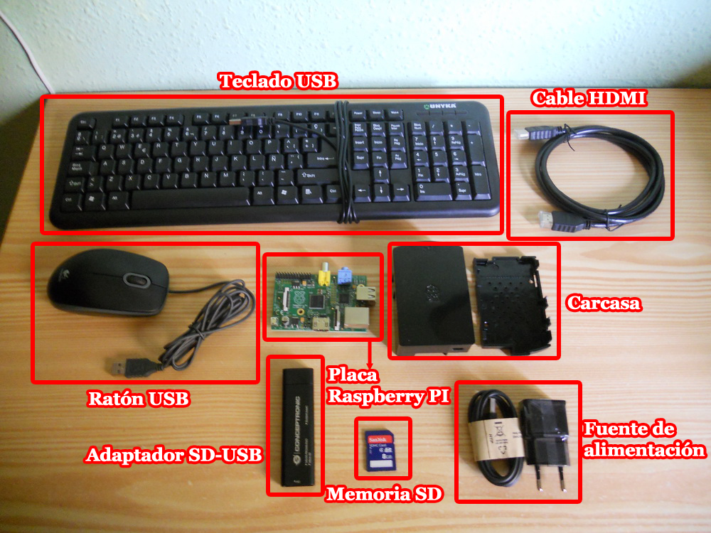
Imagen 1: Material entregado para realizar la práctica.
- El alumno en casa debe hacer lo siguiente:
- Consultar la web de Raspberry PI.
- Instalar el sistema operativo en la memoria SD.
- Conectar Rb a la Tele HDMI, teclado y ratón USB.
- Entrar al sistema y activar el modo gráfico.
- Crear usuario profesor con clave/profesor
- Poner clave profesor al usuario root
- Poner clave profesor al usuario pi
- Apuntar la MAC del interfaz de red en una etiqueta que se pegará a la carcasa de la Rb.
 Principio del punto 1 |
Principio del punto 1 |  Fin del punto 2 |
Fin del punto 2 |  Índice
Índice
2.- Instalar SO
- Lo primero será instalar el Sistema Operativo en la memoria SD. Para ello nos dirigimos a la página oficia de Raspberry PI, a la sección de descargas (http://www.raspberrypi.org/downloads/).
- De entre las diferentes opciones de sistemas operativos se elige el Raspbian Debian Wheezy para ser instalado en la memoria SD.
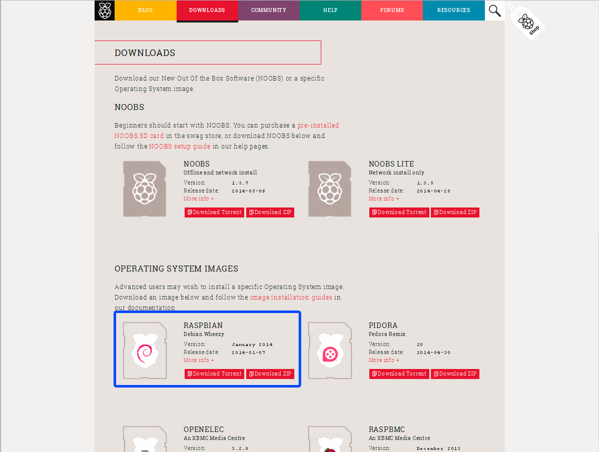
Imagen 2: Descargar Raspbian de la página oficial.
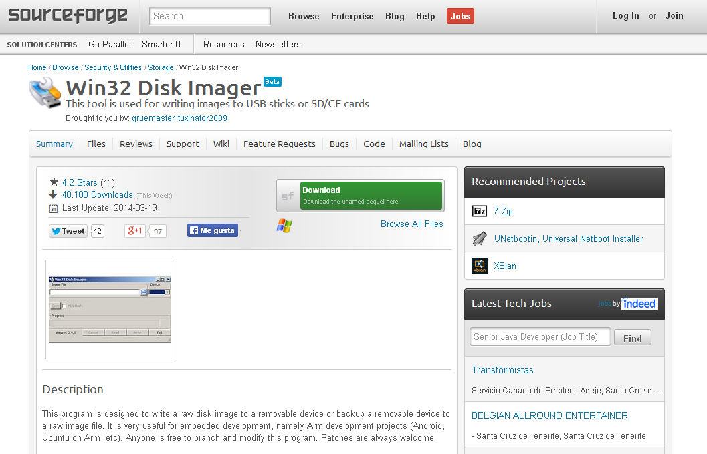
Imagen 3: Descargar Win32 Disk Imager.
- A continuación, utilizando el adaptador SD-USB entregado, se conecta la tarjeta SD al ordenador.
- Se graba la imagen de Raspbian en la memoria SD utilizando el programa Win32.
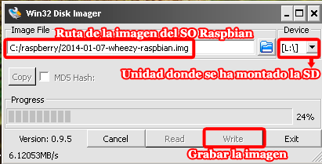
Imagen 4: Grabar imagen SO en la memoria SD.
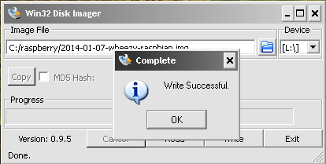
Imagen 5: Proceso de grabación completado con éxito.
- Una vez finalizada la grabación el contenido de la memoria SD será el mostrado en la siguiente imagen:
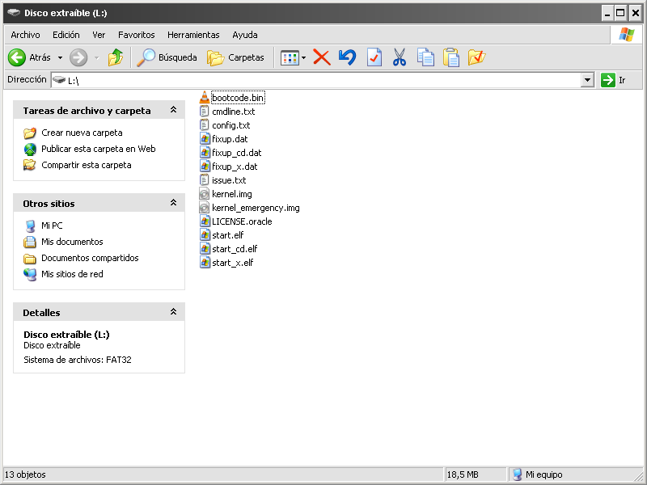
Imagen 6: Contenido de la memoria SD.
Principio del punto 2 | Fin del punto 3 | Índice
3.- Raspberry PI
3.1- Montaje
- Lo primero que hay que hacer es montar la placa Raspberry en la carcasa.
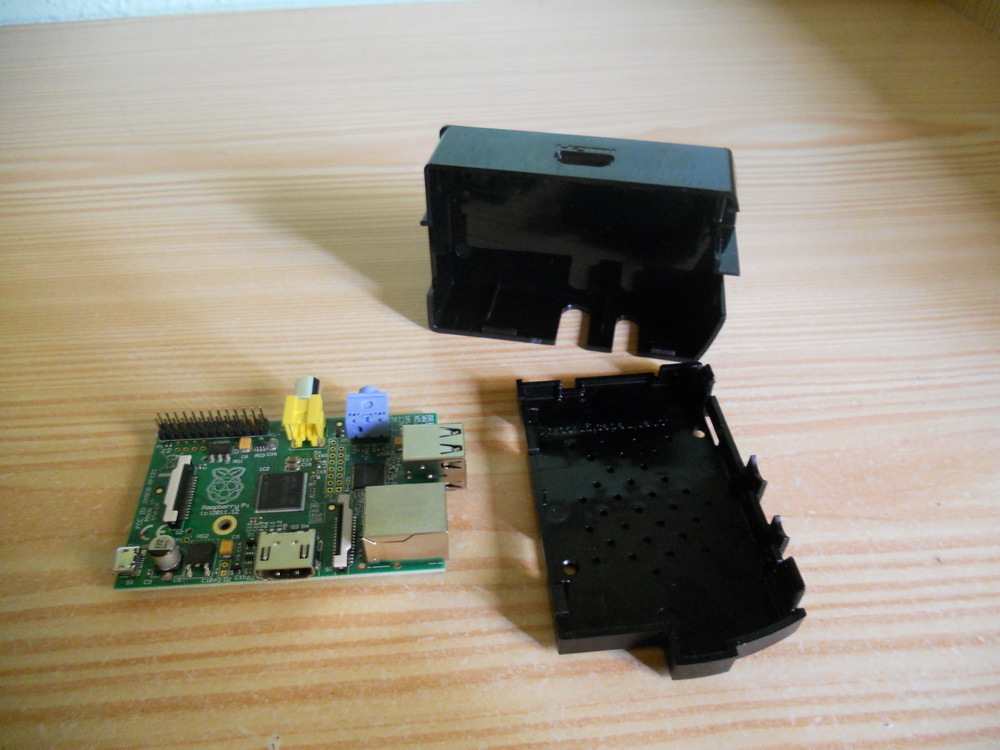

Imágenes 7-8: Montar la placa en la carcasa.
- Seguidamente se conecta a la placa Raspberry la fuente de alimentadción, el teclado y el ratón por USB, la pantalla con el cable HDMI, y se introduce la memoria SD con el sistema operativo instalado.
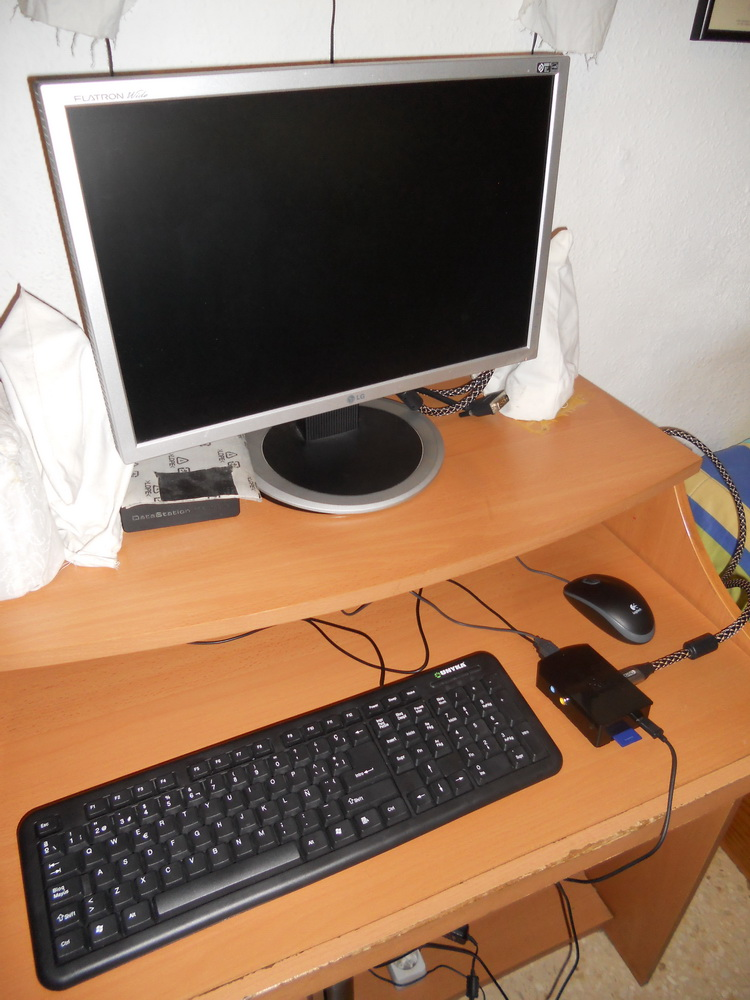
Imagen 9: Conectar los componentes del ordenador.
3.2- Primer arranque
- Una vez se conecte la fuente a la electricidad, el ordenador arrancará mostrando las siguientes pantallas:

Imágenes 10-11: Cargando el sistema operativo.
- Cuando acabe de cargar aparecerá el siguiente menú. Pulsando la tecla ESC accedemos a la consola, y ejecutando el comando startx se iniciará el entorno gráfico del sistema operativo Raspbian.
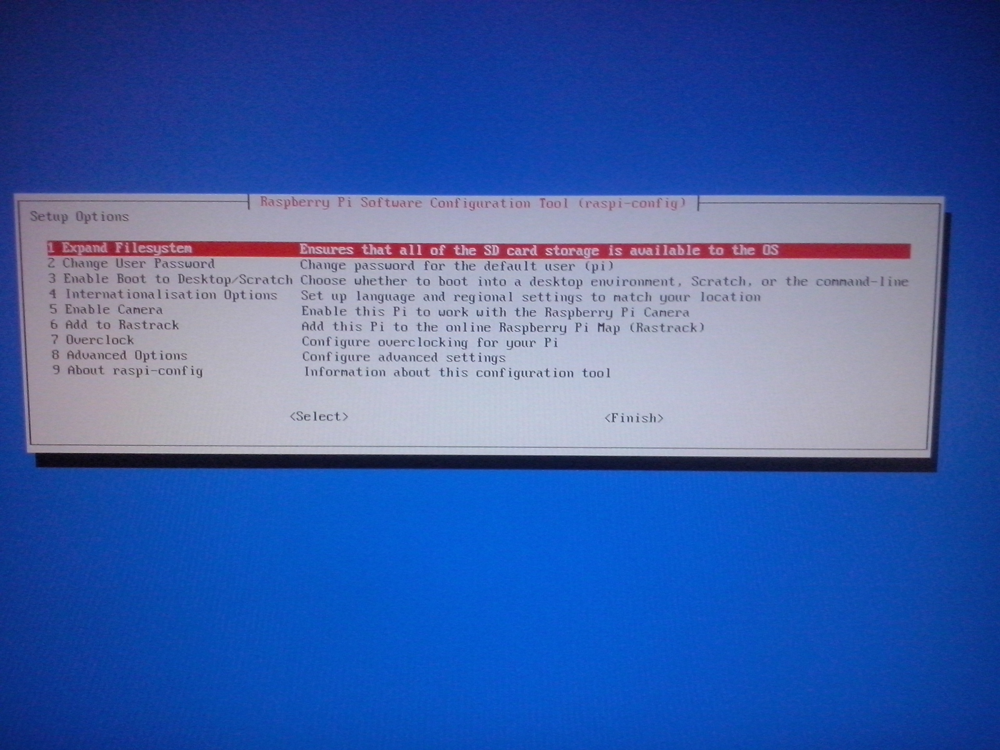
Imagen 12: Menú inicial.
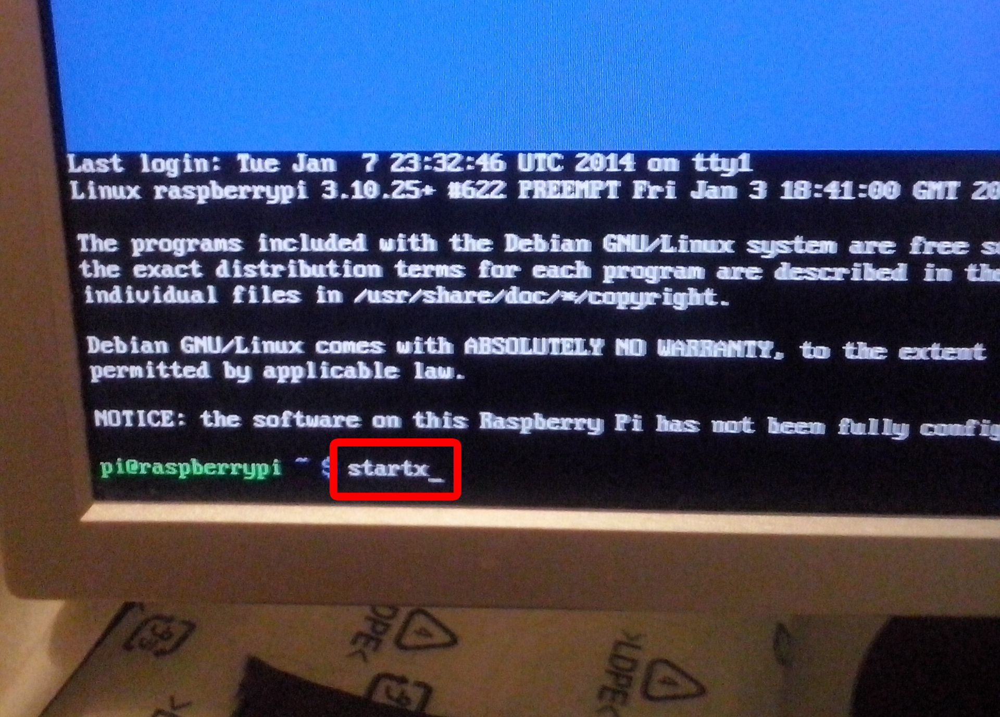
Imagen 13: Iniciar el entorno gráfico del SO.
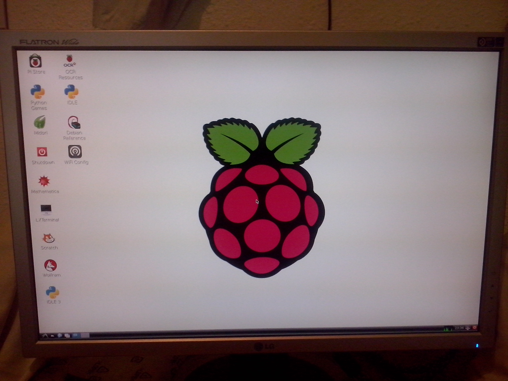
Imagen 14: Primer arranque de Raspbian.
Principio del punto 3 | Fin del punto 4 | Índice
4.- Trabajando con Raspberry PI
- Una vez arrancado el entorno gráfico accederemos a un terminal desde el cual se realizan las siguientes acciones:
- Crear usuario profesor con clave profesor. Para ello se emplean los siguientes comandos:
- sudo su: entrar como el usuario root
- useradd -m profesor: crea el usuario profesor (el párametro m, crea el "home" del usuario)
- su profesor: entrar como el usuario profesor como comprobación
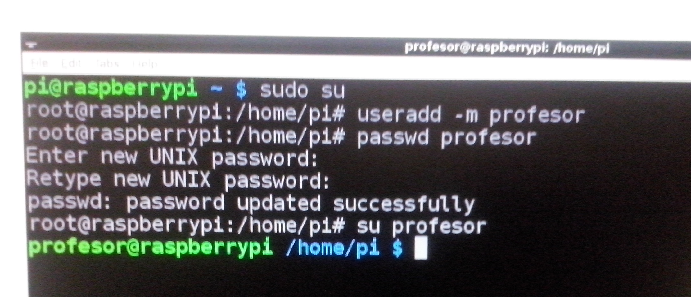
Imagen 15: Crear usuario profesor.
- Comprobar que el usuario profesor está creado con el comando cat /etc/passwd | grep profesor.
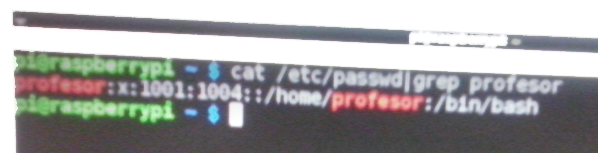
Imagen 16: Comprobar que el usuario profesor está creado.
NOTA:
- /etc/passwd es el archivo donde se guardan los usuarios del sistema. Cualquier usuario definido en el sistema aparece en él.
- Al ejecutar el comando cat /etc/passwd | grep profesor estamos pidiendo que se visualicen las líneas del fichero /etc/passwd donde aparezca profesor, comprobando por lo tanto que existe.
- Poner clave profesor al usuario root. Para ello se emplean los siguientes comandos:
- sudo su: entrar como el usuario root
- passwd root: cambia la contraseña del usuario root
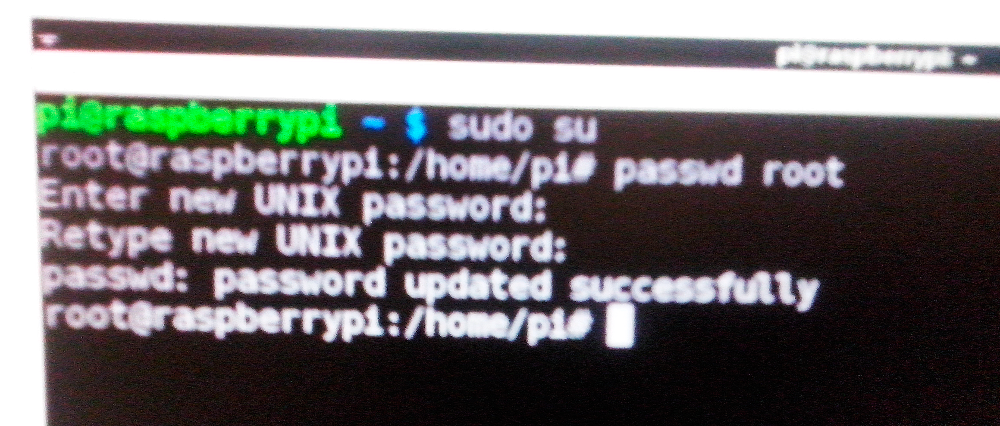
Imagen 17: Poner clave profesor al usuario root.
- Poner clave profesor al usuario pi. Para ello se emplea el siguiente comando:
- passwd pi: cambia la contraseña del usuario pi
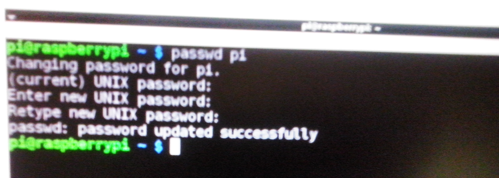
Imagen 18: Poner clave profesor al usuario pi.
- Apuntar la MAC del interfaz de red. Para ello se emplea el siguiente comando:
- sudo su: entrar como el usuario root
- ifconfig: muestra la información de las interfaces existentes en la placa
- La MAC de la placa Raspberry PI con la que se trabajó es b8:27:eb:27:09:b5

Imagen 19: Apuntar la MAC del interfaz de red.
Principio del punto 4 | Índice
Alejandro Ortega Freire 1ºASIR
Fundamentos de Hardware